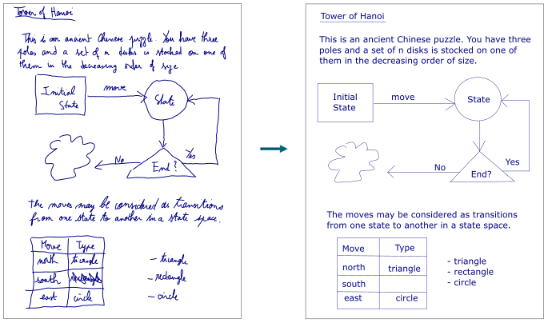
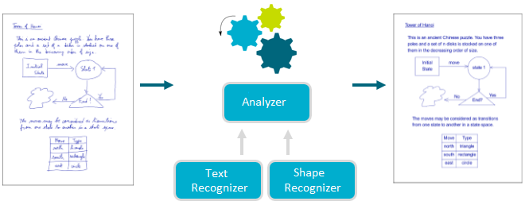

MyScript Analyzer enables the recognition of mixed content by identifying the different elements composing a document. For now, only a mix of text and shapes can be recognized, excluding mathematical expressions and music.

The recognizer sends a result describing:
The below example shows an analyzer recognition request where the following are to be specified:
<script>
var canvas = document.getElementById("analyzer-canvas");
var context = canvas.getContext("2d");
var pointerId;
var url = 'http://cloud.myscript.com/api/v3.0/recognition/rest';
var applicationKey = 'xxxxxxxx-xxxx-xxxx-xxxx-xxxxxxxxxxxx';
var hmacKey = 'xxxxxxxx-xxxx-xxxx-xxxx-xxxxxxxxxxxx';
var stroker = new MyScript.Stroker();
var analyzerRenderer = new MyScript.AnalyzerRenderer();
var analyzerRecognizer = new MyScript.AnalyzerRecognizer(url);
analyzerRecognizer.getParameters().getTextParameters().setLanguage('en_US');
var instanceId;
function doRecognition () {
analyzerRecognizer.doSimpleRecognition(applicationKey, instanceId, stroker.getStrokes(), hmacKey).then(
function (data) {
if (!instanceId) {
instanceId = data.getInstanceId();
} else if (instanceId !== data.getInstanceId()) {
return;
}
analyzerRenderer.drawRecognitionResult(stroker.getStrokes(), data.getAnalyzerDocument(), context);
}
)
}
function onPointerDown (event, x, y) {
analyzerRenderer.drawStart(event, x, y);
stroker.startStrokeWriting(x, y);
}
function onPointerMove (event, x, y) {
analyzerRenderer.drawContinue(event, x, y, context);
stroker.continueStrokeWriting(x, y);
}
function onPointerUp (event, x, y) {
analyzerRenderer.drawEnd(event, x, y, context);
stroker.endStrokeWriting(event);
if (!stroker.isEmpty()) {
doRecognition();
}
}
/**
* Firefox missing offsetX and offsetY properties hack
* @param event
* @returns {{x: number, y: number}}
*/
function getOffset (event) {
var element = event.target;
var offset = {x: 0, y: 0};
while (element.offsetParent) {
offset.x += element.offsetLeft;
offset.y += element.offsetTop;
element = element.offsetParent;
}
offset.x = event.pageX - offset.x;
offset.y = event.pageY - offset.y;
return offset;
}
function getX (event) {
if (event.offsetX) {
return event.offsetX;
}
return getOffset(event).x;
}
function getY (event) {
if (event.offsetY) {
return event.offsetY;
}
return getOffset(event).y;
}
canvas.addEventListener('mousedown', function (event) {
if (!pointerId) {
pointerId = event.pointerId;
onPointerDown(event, getX(event), getY(event));
}
}, false);
canvas.addEventListener('mousemove', function (event) {
if (pointerId === event.pointerId) {
onPointerMove(event, getX(event), getY(event));
}
}, false);
canvas.addEventListener('mouseup', function (event) {
if (pointerId === event.pointerId) {
onPointerUp(event, getX(event), getY(event));
pointerId = undefined;
}
}, false);
canvas.addEventListener('mouseleave', function (event) {
if (pointerId === event.pointerId) {
onPointerUp(event, getX(event), getY(event));
pointerId = undefined;
}
}, false);
</script>A list of limitations for analyzer recognition can be found in the appendix.
See the reference guide for information on the mandatory and optional parameters needed for text and shape recognition.
In addition to its own engine, the analyzer recognizer uses a shape recognizer and a handwriting (HWR) recognizer.

The handwriting recognizer uses resources describing a set of recognizable text lines, and the components that determine each element. The analyzer recognizer sends back components describing the textlines, providing their size and layout. That way, you can reconstitute textline as a font objects.
The shape recognizer uses resources describing a set of recognizable shapes, and the components that determine each type of shape. The analyzer recognizer sends back components in a beautified form, describing the shape's type and which curves and line segments it uses, as well as their size and position. That way, you can reconstitute the shape as a vector object.
If required, the analyzer recognizer can use resources that describe a set of recognizable links between objects, and the components that determine each type (groups, tables). The analyzer recognizer sends back components describing the link types. It provides their description and references, so you can reconstitute the document layout.